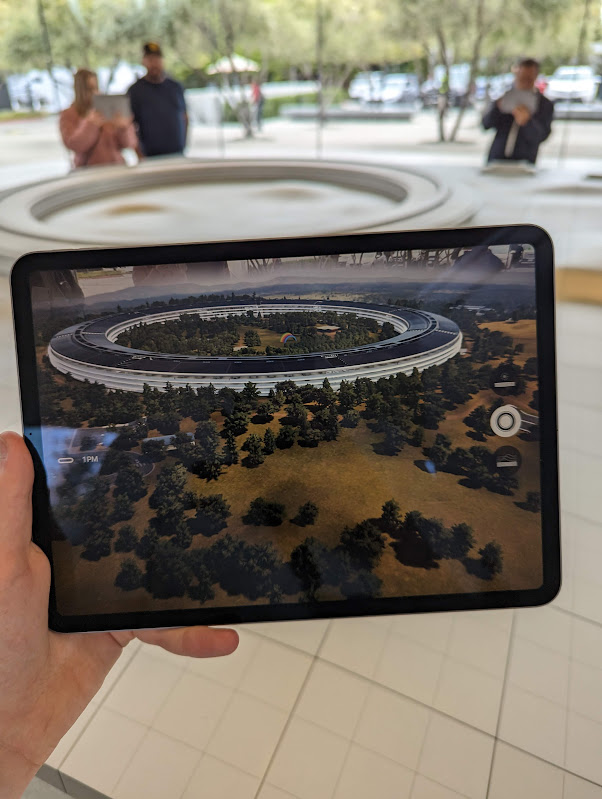

If there is one thing I do best, it's commenting on things that I have little to no experience of, so, with that, here is my tourist's guide to San Francisco from someone who's only ever been there for a week. Jokes aside, that one week was one of the most amazing weeks of my life and everything was so different and so much better than I had expected. I have tweeted a fair bit about my time in San Francisco, but never have I fully written about my trip, so here it is.
Some of the tech they had was incredible and blew me away, and some of the little things too were just as surprising.
The Tech
I wouldn't be able to write an article about San Francisco without commenting on the tech there, I'll be honest, I thought the idea that living in SF was like living 10 years in the future was something out of Hollywood and video games but no, it's real.
I saw an incredible amount of cars with cameras and lidars strapped to them or even some with no drivers at all dotted frequently around the city, to the point where by the end of the trip I had stopped taking photos of them. Before I went, I had hoped to see one driverless car, but on my first day I'd already seen multiple, and it really hadn't crossed my mind how prominent they were in the city. Of course, I tried to get a ride on one, but seeing as they're mostly in beta still, and Google wouldn't let me download any of their apps seeing as I'm a UK resident (Even though I tried changing my account location) I wasn't successful.
Last month I wrote a whole article on autonomous vehicle in San Francisco, and a study at the history and technology behind the company Zoox, who were one of the most prominent while I was there. Check it out.
Other than the cars though, the tech was similar, with the only difference being features we don't have in the UK, including the iPhone 14 in stores not having a SIM tray.
Salesforce Park
It may seem weird that I am mentioning a park second on my list of things about San Francisco, but it's for a good reason. Salesforce Park was simply beautiful and may well be the most peaceful and calming place in the world for me, especially in the evenings.
Salesforce park spans nearly 4 blocks and sits 70 feet above street level, and is home to 600 trees and 16,000 plants sorted in to 13 different botanical feature areas. There is a walking trail that loops around the whole park, with feature views of the SOMA area from every angle, I looked hard for some good photos of the park, but now I realise that I was so engrossed in my surroundings that I forgot to take many pictures.
There are places to get food in or nearby the transit centre that the park sits atop, and I believe there is also a restaurant due to open. I can imagine Salesforce Park being a great place to study, work, or just unwind.
The Sound
I can't find this anywhere else online, but, San Francisco has a very particular and recognisable sound, the sound of people, buses and trams combined with the sea breeze creates a unique sound that to me is quite soothing.
Personally, I find that this YouTube video brings me back and makes me feel like I'm there and if you're interested, I'd suggest you give it a watch
Apple Park
I knew from the start that I had to visit Apple Park, the concept of one of the biggest companies in the world having a shop and café outside their headquarters sounded amazing.
The Apple Store itself was pretty similar to many others, other than the inclusion of merchandise where you could buy Apple Park T-Shirts and Tote Bags. During my visit, I picked up a T-Shirt and a pair of AirPods Pro, both of which I'm happy with.
The staff were very nice and even offered to take a photo of family and I, seeing as we were visiting from quite far away, so now the picture for our family group chat is from an Apple Store.
They also had a cool model of Apple Park, where you could get an iPad, and it would overlay a 3D model of Apple Park on top of it, which made it very interesting to have a look around close up. 
Finally, there was a café where you could take your drinks up to a roof terrace, where you could get a glimpse of Apple Park through the trees.
Conclusion and final takeaways
San Francisco and the Bay Area was a great place to visit and is now home to some of my happiest memories and experiences and if I could go again, I would spend more time just relaxing, rather than trying to fit a bunch of things into a relatively small timeframe. Finally, here are my takeaways from the trip:
- Autonomous vehicles are really cool!
- Visit Salesforce Park if you've got the chance
- The city has its own sound
- Personally, I found it very calming
- Apple Park is worth a visit